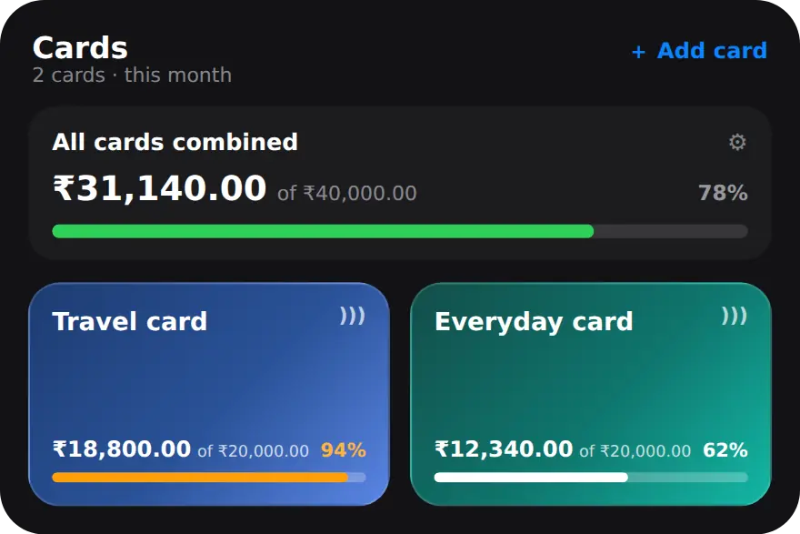

Why track spending on each credit card?
Because a card statement only tells you what happened after the month is over. Tracking as you go shows you while you can still change it.
A credit card makes spending feel lighter, because nothing leaves your account on the day. With more than one card, it is easy to lose track of how much is building up on each. One card for travel, one for groceries and online orders: each is reasonable on its own, and together they can be more than you planned. Seeing every card's running total during the month, rather than at statement time, is what lets you slow down in week three instead of being surprised in week five.
What is the difference between a card limit and a spending limit?
The card limit is how much the bank will let you spend. Your spending limit is how much you actually want to spend each month.
A card with a ₹1,50,000 credit line does not mean ₹1,50,000 a month is a sensible pace. MoneyOS keeps the two apart. Card limit is the bank's credit line, and it is optional. Your spend limit is a monthly pace you choose, such as ₹20,000. Each card then shows what you have spent this month against your spend limit, and the bar turns orange at 80% and red at 100%. You also get an alert when a purchase takes the card past 80% and again past 100%. If you set your spend limit above the card limit by mistake, the editor warns you.
How do I track spending on each credit card in MoneyOS?
Add each card in the Manage tab with your own spend limit, then pick the card whenever you log a card purchase. Five steps:
- Add the card. Open the Manage tab. Cards are at the top. Tap Add card and give it a name you will recognise, such as the bank and the card's name.
- Enter the card limit. Card limit is the bank's credit line. It is optional, so leave it at 0 if you do not know it.
- Set your spend limit. Your spend limit is the monthly pace you choose for yourself. Leave it at 0 if you only want to track what goes on the card.
- Add the billing cycle. Pick the statement date and the payment due date from your statement. MoneyOS shows roughly how many interest-free days that gives you each cycle.
- Tag each purchase. When you add an expense, choose Card as the payment method and pick the card. If the line you type or import names the card, MoneyOS picks it for you.
Card purchases you import are matched the same way. If an imported row or a pasted bank SMS names the card, it is attributed to that card in the review list, and you can change it before importing. If two cards from the same bank both match, MoneyOS leaves it for you to choose. Read how to import a statement PDF.
Can I set one limit across all my credit cards?
Yes. All cards combined adds up this month's spending on every card and measures it against one total you choose.

This is useful when no single card is the problem, but the total is. In the example above, the Travel card is close to its limit while the Everyday card has room, and the combined bar shows the whole picture at a glance. Set the combined limit to 0 to remove it. Card spending also counts towards your overall monthly budget, so it fits with category limits and a salary day plan.
How do I avoid missing a credit card bill?
Add the statement date and payment due date to the card. If notifications are on, MoneyOS reminds you 3 days before the bill is due and again on the day.
Both dates are printed on your statement. Once they are in, the card editor shows roughly how many interest-free days each cycle gives you, worked out from the gap between the two dates. Check your card's terms for how interest is charged. When you pay the bill, log it as a Card payment and pick the card. The reminders for that bill stop, and the payment is not counted as new spending on the card, so your purchases are never counted twice.
MoneyOS tracks what you have logged on each card. It does not connect to your bank, so the bank's statement total may differ, for example because of fees or charges you did not log. There is no account and no bank login, and everything stays on your iPhone. See what stays on your phone.
Frequently asked questions
How do I track spending on each credit card?
Add each card in the Manage tab, then choose the card whenever you log a card purchase. Each card shows what you have spent on it this month, against the limit you set.
What is the difference between card limit and spend limit?
Card limit is the credit line your bank gives you. Your spend limit is a monthly pace you set for yourself, usually much lower. MoneyOS warns you if your spend limit is above the card limit.
Can I set one limit across all my cards?
Yes. All cards combined adds up this month's spending on every card and measures it against one total limit you set. Set it to 0 to remove it.
Will MoneyOS remind me before my card bill is due?
Yes, if you add the payment due date and allow notifications. You get a reminder 3 days before and another on the due date, and they stop once you log the payment.
Is paying the card bill counted as spending twice?
No. A card payment is linked to the card it pays but is not counted as new spending on that card, so the purchases are not counted again.
Does MoneyOS connect to my credit card?
No. There is no bank login. You log card purchases yourself, by typing, voice, screenshots, a pasted SMS or a statement import, and everything stays on your iPhone.